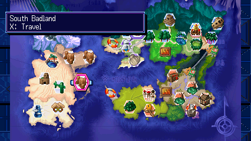

Save-body loading
25.02 → 6.11 seconds to the last observed data sector. The loaded save body matched byte for byte.
Digimon World 2003 / Reimagined for Windows

The world you remember, with more room to explore. Bring the lab along, set your own pace, and hear a familiar score in a new way.
WINDOWS x64 · EXPERIMENTAL · OWN DISC DATA REQUIRED


01 / Discover
The Digimon Lab now travels with you. Open DIGIVOLUTIONS from the menu to switch partners, choose your battle forms, and load techniques.
Locked forms give you a direction to train in, without revealing every number. Follow a hint, experiment with your team, and make the discovery yourself.
Inside the evolution hints ↗

02 / Set your pace
Keep the original pace or make room for a shorter playthrough. Normal experience, digivolution experience, and random encounters each have their own control.
03 / Same score. New textures.
Original, DS-inspired, sampled instruments, or chip sounds. Switch while the music is playing, right from SETTINGS. The song carries on.
Choose a chapter to listen. Sound never starts automatically.
The alternate palettes use a locally built music pack covering 42 banks. Instrument choices and melody balance are still being refined. Effects and unrecognized banks keep their original sound. This excerpt demonstrates live switching, rather than the final mix for every track. Track-by-track listening notes ↗
04 / Less time waiting
Faster card transfers and targeted battle optimizations cut work the game repeats. Here are the measured differences in matched local tests.
25.02 → 6.11 seconds to the last observed data sector. The loaded save body matched byte for byte.
28.72 → 7.63 seconds to the last observed file-sector write. A controlled replay produced an identical full card.
14.13 → 9.69 ms in the tested idle battle with the optional native geometry unit. Both runs stayed near 50 updates per second.
The save/load bar now uses acknowledged data instead of a fixed timer, reserving its last stretch for the game's completion check. Sector checks, retries and disk flushes remain in place.
These are short local comparisons, not full-game benchmarks. Card timings exclude confirmation input and are not total menu-to-world waits. Save measurements ↗ · Battle measurements ↗
05 / Room to explore

Travel uses the original area loader and checks the exact arrival area's visit flag. Audited story scenes and unfinished local encounters can keep a stop unavailable. The map tells you why.
Current destinations and restrictions ↗Separate field and battle settings extend the view into supported menus, the map, shops and gyms. Card folders and the portable lab also have widescreen adjustments. Field edges and menu transitions are still being tested.
L2 / LT toggles 4:3 and 16:9 in supported scenes.
R2 / RT toggles speedup. Tab still works as a hold.
06 / Still evolving
Shinka combines locally translated game code with a PSX runtime and interpreter fallback. It is playable in tested areas, with plenty of campaign coverage still ahead.
Your own dump of the supported European release, Windows, and the tools listed in the build guide. There is no standalone game download here. Existing DuckStation memory cards can be copied into a separate save profile.
Later-game compatibility, more safe travel destinations, field edges and menu transitions, soundtrack balance, and extended movie playback. Higher-resolution combat models remain an offline research prototype. Controller testing does not cover every device.
Minimizing suspends offline gameplay; restoring resumes it. Ordinary focus changes keep the game running. A debug history buffer is also off by default, avoiding a 128 MiB allocation.
Tooling checks, native regression suites, and recorded gameplay each cover different parts of the project. A working checkpoint is not a promise of full-game compatibility. Read the testing guide ↗